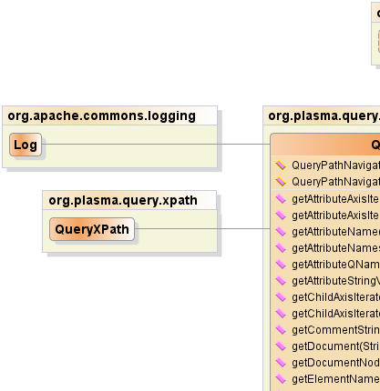
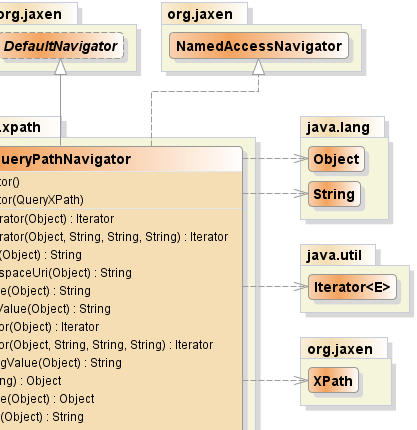
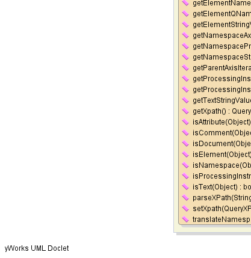
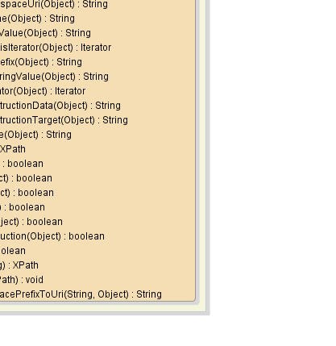

public class QueryPathNavigator
extends org.jaxen.DefaultNavigator
implements org.jaxen.NamedAccessNavigator
This class is not intended for direct usage, but is used by the Jaxen engine during evaluation.
XPath,
Serialized Form|  |  |
|  |  |
| Constructor and Description |
|---|
QueryPathNavigator() |
QueryPathNavigator(QueryXPath xpath) |
| Modifier and Type | Method and Description |
|---|---|
java.util.Iterator |
getAttributeAxisIterator(java.lang.Object contextNode) |
java.util.Iterator |
getAttributeAxisIterator(java.lang.Object contextNode,
java.lang.String localName,
java.lang.String namespacePrefix,
java.lang.String namespaceURI)
Retrieves an
Iterator over the attribute elements that
match the supplied name. |
java.lang.String |
getAttributeName(java.lang.Object obj) |
java.lang.String |
getAttributeNamespaceUri(java.lang.Object obj) |
java.lang.String |
getAttributeQName(java.lang.Object obj) |
java.lang.String |
getAttributeStringValue(java.lang.Object obj) |
java.util.Iterator |
getChildAxisIterator(java.lang.Object contextNode)
Where the given context node is a SDO Property,
gets the actual value of the property wrapped
in a CoreXPathValue and Iterator.
|
java.util.Iterator |
getChildAxisIterator(java.lang.Object contextNode,
java.lang.String localName,
java.lang.String namespacePrefix,
java.lang.String namespaceURI)
Retrieves an
Iterator over the child elements that
match the supplied local name and namespace URI. |
java.lang.String |
getCommentStringValue(java.lang.Object obj) |
java.lang.Object |
getDocument(java.lang.String url) |
java.lang.Object |
getDocumentNode(java.lang.Object contextNode) |
java.lang.String |
getElementName(java.lang.Object obj) |
java.lang.String |
getElementNamespaceUri(java.lang.Object obj) |
java.lang.String |
getElementQName(java.lang.Object obj) |
java.lang.String |
getElementStringValue(java.lang.Object obj) |
java.util.Iterator |
getNamespaceAxisIterator(java.lang.Object contextNode) |
java.lang.String |
getNamespacePrefix(java.lang.Object obj) |
java.lang.String |
getNamespaceStringValue(java.lang.Object obj) |
java.util.Iterator |
getParentAxisIterator(java.lang.Object contextNode) |
java.lang.String |
getProcessingInstructionData(java.lang.Object obj) |
java.lang.String |
getProcessingInstructionTarget(java.lang.Object obj) |
java.lang.String |
getTextStringValue(java.lang.Object obj) |
QueryXPath |
getXpath() |
boolean |
isAttribute(java.lang.Object obj) |
boolean |
isComment(java.lang.Object obj) |
boolean |
isDocument(java.lang.Object obj) |
boolean |
isElement(java.lang.Object obj) |
boolean |
isNamespace(java.lang.Object obj) |
boolean |
isProcessingInstruction(java.lang.Object obj) |
boolean |
isText(java.lang.Object obj) |
org.jaxen.XPath |
parseXPath(java.lang.String xpath)
Returns a parsed form of the given XPath string, which will be suitable
for queries on Data Graph documents.
|
void |
setXpath(QueryXPath xpath) |
java.lang.String |
translateNamespacePrefixToUri(java.lang.String prefix,
java.lang.Object context) |
getAncestorAxisIterator, getAncestorOrSelfAxisIterator, getDescendantAxisIterator, getDescendantOrSelfAxisIterator, getElementById, getFollowingAxisIterator, getFollowingSiblingAxisIterator, getNodeType, getParentNode, getPrecedingAxisIterator, getPrecedingSiblingAxisIterator, getSelfAxisIteratorclone, equals, finalize, getClass, hashCode, notify, notifyAll, toString, wait, wait, waitgetAncestorAxisIterator, getAncestorOrSelfAxisIterator, getDescendantAxisIterator, getDescendantOrSelfAxisIterator, getElementById, getFollowingAxisIterator, getFollowingSiblingAxisIterator, getNodeType, getParentNode, getPrecedingAxisIterator, getPrecedingSiblingAxisIterator, getSelfAxisIteratorpublic QueryPathNavigator()
public QueryPathNavigator(QueryXPath xpath)
public QueryXPath getXpath()
public void setXpath(QueryXPath xpath)
public boolean isElement(java.lang.Object obj)
isElement in interface org.jaxen.Navigatorpublic boolean isComment(java.lang.Object obj)
isComment in interface org.jaxen.Navigatorpublic boolean isText(java.lang.Object obj)
isText in interface org.jaxen.Navigatorpublic boolean isAttribute(java.lang.Object obj)
isAttribute in interface org.jaxen.Navigatorpublic boolean isProcessingInstruction(java.lang.Object obj)
isProcessingInstruction in interface org.jaxen.Navigatorpublic boolean isDocument(java.lang.Object obj)
isDocument in interface org.jaxen.Navigatorpublic boolean isNamespace(java.lang.Object obj)
isNamespace in interface org.jaxen.Navigatorpublic java.lang.String getElementName(java.lang.Object obj)
getElementName in interface org.jaxen.Navigatorpublic java.lang.String getElementNamespaceUri(java.lang.Object obj)
getElementNamespaceUri in interface org.jaxen.Navigatorpublic java.lang.String getAttributeName(java.lang.Object obj)
getAttributeName in interface org.jaxen.Navigatorpublic java.lang.String getAttributeNamespaceUri(java.lang.Object obj)
getAttributeNamespaceUri in interface org.jaxen.Navigatorpublic java.util.Iterator getChildAxisIterator(java.lang.Object contextNode)
getChildAxisIterator in interface org.jaxen.NavigatorgetChildAxisIterator in class org.jaxen.DefaultNavigatorcontextNode - the context nodeCoreXPathResult,
DefaultNavigator.getChildAxisIterator(java.lang.Object)public java.util.Iterator getChildAxisIterator(java.lang.Object contextNode,
java.lang.String localName,
java.lang.String namespacePrefix,
java.lang.String namespaceURI)
Iterator over the child elements that
match the supplied local name and namespace URI.getChildAxisIterator in interface org.jaxen.NamedAccessNavigatorcontextNode - the origin context nodelocalName - the local name of the children to return, always presentnamespacePrefix - ignored; prefixes are not used when matching in XPathnamespaceURI - the URI of the namespace of the children to returnpublic java.util.Iterator getNamespaceAxisIterator(java.lang.Object contextNode)
getNamespaceAxisIterator in interface org.jaxen.NavigatorgetNamespaceAxisIterator in class org.jaxen.DefaultNavigatorpublic java.util.Iterator getParentAxisIterator(java.lang.Object contextNode)
getParentAxisIterator in interface org.jaxen.NavigatorgetParentAxisIterator in class org.jaxen.DefaultNavigatorpublic java.util.Iterator getAttributeAxisIterator(java.lang.Object contextNode)
getAttributeAxisIterator in interface org.jaxen.NavigatorgetAttributeAxisIterator in class org.jaxen.DefaultNavigatorpublic java.util.Iterator getAttributeAxisIterator(java.lang.Object contextNode,
java.lang.String localName,
java.lang.String namespacePrefix,
java.lang.String namespaceURI)
Iterator over the attribute elements that
match the supplied name.getAttributeAxisIterator in interface org.jaxen.NamedAccessNavigatorcontextNode - the origin context nodelocalName - the local name of the attributes to return, always presentnamespacePrefix - the prefix of the namespace of the attributes to returnnamespaceURI - the URI of the namespace of the attributes to returnpublic org.jaxen.XPath parseXPath(java.lang.String xpath)
throws org.jaxen.saxpath.SAXPathException
parseXPath in interface org.jaxen.Navigatororg.jaxen.saxpath.SAXPathExceptionpublic java.lang.Object getDocumentNode(java.lang.Object contextNode)
getDocumentNode in interface org.jaxen.NavigatorgetDocumentNode in class org.jaxen.DefaultNavigatorpublic java.lang.String getElementQName(java.lang.Object obj)
getElementQName in interface org.jaxen.Navigatorpublic java.lang.String getAttributeQName(java.lang.Object obj)
getAttributeQName in interface org.jaxen.Navigatorpublic java.lang.String getNamespaceStringValue(java.lang.Object obj)
getNamespaceStringValue in interface org.jaxen.Navigatorpublic java.lang.String getNamespacePrefix(java.lang.Object obj)
getNamespacePrefix in interface org.jaxen.Navigatorpublic java.lang.String getTextStringValue(java.lang.Object obj)
getTextStringValue in interface org.jaxen.Navigatorpublic java.lang.String getAttributeStringValue(java.lang.Object obj)
getAttributeStringValue in interface org.jaxen.Navigatorpublic java.lang.String getElementStringValue(java.lang.Object obj)
getElementStringValue in interface org.jaxen.Navigatorpublic java.lang.String getProcessingInstructionTarget(java.lang.Object obj)
getProcessingInstructionTarget in interface org.jaxen.NavigatorgetProcessingInstructionTarget in class org.jaxen.DefaultNavigatorpublic java.lang.String getProcessingInstructionData(java.lang.Object obj)
getProcessingInstructionData in interface org.jaxen.NavigatorgetProcessingInstructionData in class org.jaxen.DefaultNavigatorpublic java.lang.String getCommentStringValue(java.lang.Object obj)
getCommentStringValue in interface org.jaxen.Navigatorpublic java.lang.String translateNamespacePrefixToUri(java.lang.String prefix,
java.lang.Object context)
translateNamespacePrefixToUri in interface org.jaxen.NavigatortranslateNamespacePrefixToUri in class org.jaxen.DefaultNavigatorpublic java.lang.Object getDocument(java.lang.String url)
throws org.jaxen.FunctionCallException
getDocument in interface org.jaxen.NavigatorgetDocument in class org.jaxen.DefaultNavigatororg.jaxen.FunctionCallExceptionPlasmaSDO™ and PlasmaQuery™ are trademarks of TerraMeta Software, Inc. Copyright © 2011 - All Rights Reserved.